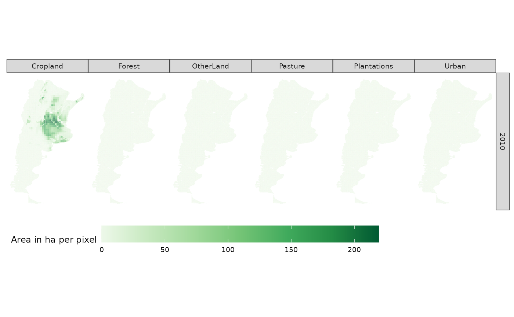

Downscaling land-use change projections in Argentina --- a tutorial using `downscalr`
Source:vignettes/downscalr_tutorial.Rmd
downscalr_tutorial.RmdIntroduction
The downscalr package aims at providing users of all kinds a readily accessible way to employ the DownScale model for their purposes. The DownScale model bridges the gap between observed land-use change (LUC), drivers of LUC and aggregate LUC targets. One advantage is its ability to estimate the priors using an empirical econometric model (if observations are available), which relates a set of exogenous and dynamically updated endogenous variables to observed LUC patterns. In this case, priors straightforwardly refers to LUC predictions from the economoetric model given static and/or dynamically updated input data.
The DownScale model itself is compatible with the GLOBIOM integrated assessment model, which can provide consistent high-resolution land-use change projections at up to 5 arcminute resolution. Figure 1 below gives an overview on which parts are involved and how the downscaling process is supposed to run its course. Note, however, that the aggregate targets to be downscaled naturally do not need to be provided by GLOBIOM. For instance, in this tutorial we showcase the functionality of the downscalr package with LUC targets for Argentina obtained from the FABLE calculator.
Fig. 1 - Overview of the GLOBIOM DownScale framework
In what follows, each process in Figure 1 – from left to right – and how it is carried out in R is demonstrated.
Getting started
Before we can start with the actual downscaling, some required packages have to be attached to your R session. The first three are standard packages to facilitate data manipulation and the last one, of course, is the subject of this tutorial.
#install.packages("tidyr","tibble","dplyr")
library(tidyr)
library(tibble)
library(dplyr)
#devtools::install_github("tkrisztin/downscalr",ref="HEAD")
library(downscalr)Input data & Prior module
The input data mostly enters the downscaling procedure via the Prior module as its the informational basis for the empirical prediction of the priors to the Downscaling module. The econometric framework employed here is a Bayesian Multinomial logistic (MNL) model, which perceives categorical LUC observations, i.e. Y, as a response of some explanatory data set, i.e. X.
Moreover, LUC is basically the result of some mapping from each LU class to all LU classes. In practice that implies the MNL model is estimated for all LUC origin classes separately, however, for the sake of this tutorial we will limit the scope to one example and only consider LUC stemming from LU class Cropland.
Preliminaries
First, load the examplary data within downscalr package and transform it into the necessary format for the MNL model.
# Set example land use change origin to Cropland
example_LU_from <- "Cropland"
# load data
data(argentina_df,argentina_luc)
# Prepare data for econometric Multinomial logistic (MNL) regression
Yraw <- argentina_luc
Xraw <- argentina_df$xmat
Y <- dplyr::filter(Yraw,lu.from == example_LU_from & Ts == 2000) %>%
tidyr::pivot_wider(names_from = lu.to) %>%
tibble::column_to_rownames(var = "ns") %>%
dplyr::select(-c(lu.from, Ts))
X <- Xraw %>% tidyr::pivot_wider(names_from = "ks") %>%
dplyr::arrange(match(ns,Y$ns)) %>%
tibble::column_to_rownames(var = "ns")Estimate MNL model
The MNL function requires the data input to be in matrix format. Further note, the baseline category is always set to the examined LUC origin class, i.e. currently set to Cropland. The other inputs control the amount of after burn-in draws, i.e. \(niter-nburn\), from the Gibbs Sampler and the prior variance of the model coefficients \(A0\). For now they can be kept to their default values.
#Compute MNL model with standard settings
baseline <- which(colnames(Y) == example_LU_from)
# Decreased niter = 100 and nburn = 50 for faster computation
results_MNL <- mnlogit(as.matrix(X), as.matrix(Y), baseline, niter = 100, nburn = 50, A0 = 10^4)
# Strongly recommended if you have more time:
# results_MNL <- mnlogit(as.matrix(X), as.matrix(Y), baseline, niter = 2000, nburn = 1000, A0 = 10^4)Stored in results_MNL (apart from inputs X,Y & baseline) are the after burn-in posterior draws for the MNL model coefficients and corresponding marginal effects. And that`s basically it, we now have everything we want out of the Prior module and are able to proceed.
Downscale module
In this step the aggregate target data comes into play and the actual downscaling is applied. For ease of demonstration, we limit the downscaling scope to target projections corresponding to the year 2010. Yet, this example should still enable you to apply downscaling to later projections as well.
The principle difference between years is given by the econometric model specification, i.e. the explanatory data X in the prior prediction step changes at least in terms of the LU class predictor, in fact according to the downscaled projections for each unit of observation from the previous time period. And at most including some dynamically changing covariates via projections or added restrictions.
The default settings automatically considers the former, i.e. changes in the LU class, if one wishes to downscale from 2010 onwards. for now, we refer to the downscalr documentation if one intends to use more advanced settings.
Preliminaries
Set example year, load & prepare target data. Moreover, compute mean of coefficient posterior draws and transform data matrix X and mean coefficient matrix to the correct long format required by function downscale().
# Set example year of downscaling target. e.g. 2010
example_time <- 2010
# Prepare inputs for downscale function
## get target data and filter for year and lu.from according to example, i.e. 2010 & cropland
data(argentina_FABLE)
arg_targets_crop_2010 <- dplyr::filter(argentina_FABLE, lu.from == example_LU_from &
times == example_time)
## pivot explanatory input data into long format
X_long <- X %>% tibble::rownames_to_column(var="ns") %>%
tidyr::pivot_longer(!ns, names_to="ks", values_to = "value")
## prior oefficients: compute mean of posterior draws & pivot to long format
pred_coeff <- as.data.frame(apply(results_MNL$postb[,-baseline,],c(1,2),mean))
pred_coeff_long <- pred_coeff %>% tibble::rownames_to_column(var="ks") %>%
tidyr::pivot_longer(!ks, names_to = "lu.to", values_to="value") %>%
dplyr::arrange(lu.to) %>%
tibble::add_column(lu.from=example_LU_from, .after="ks")
## starting area should provide information on area of each (higher resolution) grid cell, i.e ns
arg_start_areas_crop <- dplyr::filter(argentina_df$lu_levels, lu.from == example_LU_from)Downscaling computation and results
The downscale() function either accepts priors directly or computes them within from passed on explanatory and mean coefficient data. Here the latter method is shown. The default downscaling technique applied is Bias Correction (BS).
Lastly, given the example settings all remaining inputs to the downscale function can be kept at their default value.
results_DS <- downscale(targets = arg_targets_crop_2010,
start.areas = arg_start_areas_crop, xmat = X_long, betas = pred_coeff_long)
downscaled_LUC <- results_DS$out.resThat’s it! You successfully downscaled LUC from Cropland in Argentina from target FABLE projections for the year 2010. The results are stored in results_DS$out.res.
Visualize results
#load raster data for argentina
data(argentina_raster)
# call plot function & plot downscaled LUC projections from Cropland for the year 2010
LUC_argentina_2010_Crop_plot <- LUC_plot(downscaled_LUC, argentina_raster)
#> Loading required package: raster
#> Loading required package: sp
#>
#> Attaching package: 'raster'
#> The following object is masked from 'package:dplyr':
#>
#> select
LUC_argentina_2010_Crop_plot$LUC.plot